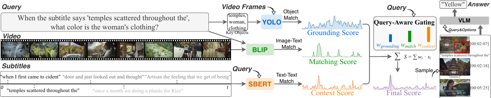

Long video understanding remains challenging for Multimodal Large Language Models (MLLMs) due to the prohibitive cost of processing dense frame sequences. Prevailing keyframe-selection methods rely on either a single visual-centric metric or a static fusion of heuristic scores. This "one-size-fits-all" paradigm frequently fails: visual-only metrics are ineffective for plot-driven narrative queries, while indiscriminately adding textual scores injects severe modal noise for purely visual tasks.
We propose Q-Gate, which decouples retrieval into three lightweight expert streams — Visual Grounding for local details, Global Matching for scene semantics, and Contextual Alignment for subtitle-driven narratives. A Query-Modulated Gating Mechanism leverages the in-context reasoning of an LLM to assess the query's intent and dynamically allocate attention across the experts, activating necessary modalities while muting irrelevant ones to maximize the signal-to-noise ratio. Extensive experiments on LongVideoBench and Video-MME across multiple MLLM backbones show that Q-Gate substantially outperforms state-of-the-art baselines while remaining optimization-free.

Q-Gate runs in three stages:
Three parallel streams produce per-second, time-aligned score distributions, then pass through a unified normalization pipeline (Min-Max scaling + Masked Temperature Softmax, τ = 0.5).
An LLM acts as a zero-shot Mixture-of-Experts gate, reading the query and emitting a weight triple that sums to 1 — routing attention to the streams the question actually needs.
The fused distribution's top-K seconds become keyframes. Each is anchored with its [Image at MM:SS] timestamp (and subtitles) to form a temporal bridge for the downstream MLLM.
Off-the-shelf experts, no fine-tuning, a single non-iterative gating pass — adding negligible overhead while drastically cutting the visual token load.
Object-level verification for fine-grained "who / what / where" details — counting, colors, spatial relations.
Frame-level semantic similarity between the query and the whole image — the reliable default for scene understanding.
Localizes narrative cues from subtitles — essential for plot-driven, reasoning, and dialogue-anchored queries.
Downstream-QA accuracy (%) on LongVideoBench (LVB) and Video-MME (MME), reported across MLLM backbones and video-length splits (from the paper, Table 1).
| Backbone | K | LVB Long | LVB Med | LVB Short | MME Long | MME Med | MME Short |
|---|---|---|---|---|---|---|---|
| GPT-4o + Q-Gate | 8 | 50.71 | 56.55 | 65.41 | 54.78 | 59.68 | 67.16 |
| Qwen3-VL + Q-Gate | 32 | 59.40 | 63.11 | 70.59 | 61.19 | 66.13 | 79.41 |
Q-Gate outperforms strong keyframe-selection baselines in the majority of settings, with the largest gains on long videos (up to +6.4 on Video-MME Long). With only K = 32 frames it rivals or surpasses 72B-scale VLMs and APIs digesting hundreds of frames. See the paper for the full comparison, ablations, and efficiency analysis.
@article{wang2026focus,
title={Where to Focus: Query-Modulated Multimodal Keyframe Selection for Long Video Understanding},
author={Wang, Shaoguang and Guo, Weiyu and Chen, Ziyang and Hu, Xuming and Xiong, Hui},
journal={arXiv preprint arXiv:2604.17422},
year={2026}
}